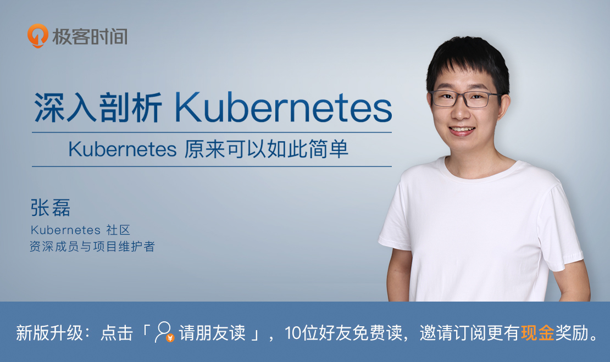

- 00 开篇词 打通“容器技术”的任督二脉.md
- 01 预习篇 · 小鲸鱼大事记（一）：初出茅庐.md
- 02 预习篇 · 小鲸鱼大事记（二）：崭露头角.md
- 03 预习篇 · 小鲸鱼大事记（三）：群雄并起.md
- 04 预习篇 · 小鲸鱼大事记（四）：尘埃落定.md
- 05 白话容器基础（一）：从进程说开去.md
- 06 白话容器基础（二）：隔离与限制.md
- 07 白话容器基础（三）：深入理解容器镜像.md
- 08 白话容器基础（四）：重新认识Docker容器.md
- 09 从容器到容器云：谈谈Kubernetes的本质.md
- 10 Kubernetes一键部署利器：kubeadm.md
- 11 从0到1：搭建一个完整的Kubernetes集群.md
- 12 牛刀小试：我的第一个容器化应用.md
- 13 为什么我们需要Pod？.md
- 14 深入解析Pod对象（一）：基本概念.md
- 15 深入解析Pod对象（二）：使用进阶.md
- 16 编排其实很简单：谈谈“控制器”模型.md
- 17 经典PaaS的记忆：作业副本与水平扩展.md
- 18 深入理解StatefulSet（一）：拓扑状态.md
- 19 深入理解StatefulSet（二）：存储状态.md
- 20 深入理解StatefulSet（三）：有状态应用实践.md
- 21 容器化守护进程的意义：DaemonSet.md
- 22 撬动离线业务：Job与CronJob.md
- 23 声明式API与Kubernetes编程范式.md
- 24 深入解析声明式API（一）：API对象的奥秘.md
- 25 深入解析声明式API（二）：编写自定义控制器.md
- 26 基于角色的权限控制：RBAC.md
- 27 聪明的微创新：Operator工作原理解读.md
- 28 PV、PVC、StorageClass，这些到底在说啥？.md
- 29 PV、PVC体系是不是多此一举？从本地持久化卷谈起.md
- 30 编写自己的存储插件：FlexVolume与CSI.md
- 31 容器存储实践：CSI插件编写指南.md
- 32 浅谈容器网络.md
- 33 深入解析容器跨主机网络.md
- 34 Kubernetes网络模型与CNI网络插件.md
- 35 解读Kubernetes三层网络方案.md
- 36 为什么说Kubernetes只有soft multi-tenancy？.md
- 37 找到容器不容易：Service、DNS与服务发现.md
- 38 从外界连通Service与Service调试“三板斧”.md
- 39 谈谈Service与Ingress.md
- 40 Kubernetes的资源模型与资源管理.md
- 41 十字路口上的Kubernetes默认调度器.md
- 42 Kubernetes默认调度器调度策略解析.md
- 43 Kubernetes默认调度器的优先级与抢占机制.md
- 44 Kubernetes GPU管理与Device Plugin机制.md
- 45 幕后英雄：SIG-Node与CRI.md
- 46 解读 CRI 与 容器运行时.md
- 47 绝不仅仅是安全：Kata Containers 与 gVisor.md
- 48 Prometheus、Metrics Server与Kubernetes监控体系.md
- 49 Custom Metrics_ 让Auto Scaling不再“食之无味”.md
- 50 让日志无处可逃：容器日志收集与管理.md
- 51 谈谈Kubernetes开源社区和未来走向.md
- 52 答疑：在问题中解决问题，在思考中产生思考.md
- 特别放送 2019 年，容器技术生态会发生些什么？.md
- 特别放送 基于 Kubernetes 的云原生应用管理，到底应该怎么做？.md
- 结束语 Kubernetes：赢开发者赢天下.md
49 Custom Metrics_ 让Auto Scaling不再“食之无味”
你好，我是张磊。今天我和你分享的主题是：Custom Metrics，让Auto Scaling不再“食之无味”。
在上一篇文章中，我为你详细讲述了 Kubernetes 里的核心监控体系的架构。不难看到，Prometheus 项目在其中占据了最为核心的位置。
实际上，借助上述监控体系，Kubernetes 就可以为你提供一种非常有用的能力，那就是 Custom Metrics，自定义监控指标。
在过去的很多 PaaS 项目中，其实都有一种叫作 Auto Scaling，即自动水平扩展的功能。只不过，这个功能往往只能依据某种指定的资源类型执行水平扩展，比如 CPU 或者 Memory 的使用值。
而在真实的场景中，用户需要进行Auto Scaling 的依据往往是自定义的监控指标。比如，某个应用的等待队列的长度，或者某种应用相关资源的使用情况。这些复杂多变的需求，在传统 PaaS项目和其他容器编排项目里，几乎是不可能轻松支持的。
而凭借强大的 API 扩展机制，Custom Metrics已经成为了 Kubernetes 的一项标准能力。并且，Kubernetes 的自动扩展器组件 Horizontal Pod Autoscaler （HPA）， 也可以直接使用Custom Metrics来执行用户指定的扩展策略，这里的整个过程都是非常灵活和可定制的。
不难想到，Kubernetes 里的 Custom Metrics 机制，也是借助Aggregator APIServer 扩展机制来实现的。这里的具体原理是，当你把 Custom Metrics APIServer 启动之后，Kubernetes 里就会出现一个叫作custom.metrics.k8s.io的 API。而当你访问这个 URL 时，Aggregator就会把你的请求转发给Custom Metrics APIServer 。
而Custom Metrics APIServer 的实现，其实就是一个 Prometheus 项目的 Adaptor。
比如，现在我们要实现一个根据指定 Pod 收到的 HTTP 请求数量来进行 Auto Scaling 的 Custom Metrics，这个 Metrics 就可以通过访问如下所示的自定义监控 URL 获取到：
https://<apiserver_ip>/apis/custom-metrics.metrics.k8s.io/v1beta1/namespaces/default/pods/sample-metrics-app/http_requests
这里的工作原理是，当你访问这个 URL 的时候，Custom Metrics APIServer就会去 Prometheus 里查询名叫sample-metrics-app这个Pod 的http_requests指标的值，然后按照固定的格式返回给访问者。
当然，http_requests指标的值，就需要由 Prometheus 按照我在上一篇文章中讲到的核心监控体系，从目标 Pod 上采集。
这里具体的做法有很多种，最普遍的做法，就是让 Pod 里的应用本身暴露出一个/metrics API，然后在这个 API 里返回自己收到的HTTP的请求的数量。所以说，接下来 HPA 只需要定时访问前面提到的自定义监控 URL，然后根据这些值计算是否要执行 Scaling 即可。
接下来，我通过一个具体的实例，来为你讲解一下 Custom Metrics 具体的使用方式。这个实例的 GitHub 库在这里，你可以点击链接查看。在这个例子中，我依然会假设你的集群是 kubeadm 部署出来的，所以 Aggregator 功能已经默认开启了。
备注：我们这里使用的实例，fork 自 Lucas 在上高中时做的一系列Kubernetes 指南。
首先，我们当然是先部署 Prometheus 项目。这一步，我当然会使用 Prometheus Operator来完成，如下所示：
$ kubectl apply -f demos/monitoring/prometheus-operator.yaml
clusterrole "prometheus-operator" created
serviceaccount "prometheus-operator" created
clusterrolebinding "prometheus-operator" created
deployment "prometheus-operator" created
$ kubectl apply -f demos/monitoring/sample-prometheus-instance.yaml
clusterrole "prometheus" created
serviceaccount "prometheus" created
clusterrolebinding "prometheus" created
prometheus "sample-metrics-prom" created
service "sample-metrics-prom" created
第二步，我们需要把 Custom Metrics APIServer 部署起来，如下所示：
$ kubectl apply -f demos/monitoring/custom-metrics.yaml
namespace "custom-metrics" created
serviceaccount "custom-metrics-apiserver" created
clusterrolebinding "custom-metrics:system:auth-delegator" created
rolebinding "custom-metrics-auth-reader" created
clusterrole "custom-metrics-read" created
clusterrolebinding "custom-metrics-read" created
deployment "custom-metrics-apiserver" created
service "api" created
apiservice "v1beta1.custom-metrics.metrics.k8s.io" created
clusterrole "custom-metrics-server-resources" created
clusterrolebinding "hpa-controller-custom-metrics" created
第三步，我们需要为 Custom Metrics APIServer 创建对应的 ClusterRoleBinding，以便能够使用curl来直接访问 Custom Metrics 的 API：
$ kubectl create clusterrolebinding allowall-cm --clusterrole custom-metrics-server-resources --user system:anonymous
clusterrolebinding "allowall-cm" created
第四步，我们就可以把待监控的应用和 HPA 部署起来了，如下所示：
$ kubectl apply -f demos/monitoring/sample-metrics-app.yaml
deployment "sample-metrics-app" created
service "sample-metrics-app" created
servicemonitor "sample-metrics-app" created
horizontalpodautoscaler "sample-metrics-app-hpa" created
ingress "sample-metrics-app" created
这里，我们需要关注一下 HPA 的配置，如下所示：
kind: HorizontalPodAutoscaler
apiVersion: autoscaling/v2beta1
metadata:
name: sample-metrics-app-hpa
spec:
scaleTargetRef:
apiVersion: apps/v1
kind: Deployment
name: sample-metrics-app
minReplicas: 2
maxReplicas: 10
metrics:
- type: Object
object:
target:
kind: Service
name: sample-metrics-app
metricName: http_requests
targetValue: 100
可以看到，HPA 的配置，就是你设置 Auto Scaling 规则的地方。
比如，scaleTargetRef字段，就指定了被监控的对象是名叫sample-metrics-app的 Deployment，也就是我们上面部署的被监控应用。并且，它最小的实例数目是2，最大是10。
在metrics字段，我们指定了这个 HPA 进行 Scale 的依据，是名叫http_requests的 Metrics。而获取这个 Metrics 的途径，则是访问名叫sample-metrics-app的 Service。
有了这些字段里的定义， HPA 就可以向如下所示的 URL 发起请求来获取 Custom Metrics 的值了：
https://<apiserver_ip>/apis/custom-metrics.metrics.k8s.io/v1beta1/namespaces/default/services/sample-metrics-app/http_requests
需要注意的是，上述这个 URL 对应的被监控对象，是我们的应用对应的 Service。这跟本文一开始举例用到的 Pod 对应的 Custom Metrics URL 是不一样的。当然，对于一个多实例应用来说，通过 Service 来采集 Pod 的 Custom Metrics 其实才是合理的做法。
这时候，我们可以通过一个名叫hey的测试工具来为我们的应用增加一些访问压力，具体做法如下所示：
$ # Install hey
$ docker run -it -v /usr/local/bin:/go/bin golang:1.8 go get github.com/rakyll/hey
$ export APP_ENDPOINT=$(kubectl get svc sample-metrics-app -o template --template {{.spec.clusterIP}}); echo ${APP_ENDPOINT}
$ hey -n 50000 -c 1000 http://${APP_ENDPOINT}
与此同时，如果你去访问应用 Service 的 Custom Metircs URL，就会看到这个 URL 已经可以为你返回应用收到的 HTTP 请求数量了，如下所示：
$ curl -sSLk https://<apiserver_ip>/apis/custom-metrics.metrics.k8s.io/v1beta1/namespaces/default/services/sample-metrics-app/http_requests
{
"kind": "MetricValueList",
"apiVersion": "custom-metrics.metrics.k8s.io/v1beta1",
"metadata": {
"selfLink": "/apis/custom-metrics.metrics.k8s.io/v1beta1/namespaces/default/services/sample-metrics-app/http_requests"
},
"items": [
{
"describedObject": {
"kind": "Service",
"name": "sample-metrics-app",
"apiVersion": "/__internal"
},
"metricName": "http_requests",
"timestamp": "2018-11-30T20:56:34Z",
"value": "501484m"
}
]
}
这里需要注意的是，Custom Metrics API 为你返回的 Value 的格式。
在为被监控应用编写/metrics API 的返回值时，我们其实比较容易计算的，是该 Pod 收到的 HTTP request 的总数。所以，我们这个应用的代码其实是如下所示的样子：
if (request.url == "/metrics") {
response.end("# HELP http_requests_total The amount of requests served by the server in total\n# TYPE http_requests_total counter\nhttp_requests_total " + totalrequests + "\n");
return;
}
可以看到，我们的应用在/metrics 对应的 HTTP response 里返回的，其实是http_requests_total的值。这，也就是 Prometheus 收集到的值。
而 Custom Metrics APIServer 在收到对http_requests指标的访问请求之后，它会从Prometheus 里查询http_requests_total的值，然后把它折算成一个以时间为单位的请求率，最后把这个结果作为http_requests指标对应的值返回回去。
所以说，我们在对前面的 Custom Metircs URL 进行访问时，会看到值是501484m，这里的格式，其实就是milli-requests，相当于是在过去两分钟内，每秒有501个请求。这样，应用的开发者就无需关心如何计算每秒的请求个数了。而这样的“请求率”的格式，是可以直接被 HPA 拿来使用的。
这时候，如果你同时查看 Pod 的个数的话，就会看到 HPA 开始增加 Pod 的数目了。
不过，在这里你可能会有一个疑问，Prometheus 项目，又是如何知道采集哪些 Pod 的 /metrics API 作为监控指标的来源呢。
实际上，如果仔细观察一下我们前面创建应用的输出，你会看到有一个类型是ServiceMonitor的对象也被创建了出来。它的 YAML 文件如下所示：
apiVersion: monitoring.coreos.com/v1
kind: ServiceMonitor
metadata:
name: sample-metrics-app
labels:
service-monitor: sample-metrics-app
spec:
selector:
matchLabels:
app: sample-metrics-app
endpoints:
- port: web
这个ServiceMonitor对象，正是 Prometheus Operator 项目用来指定被监控 Pod 的一个配置文件。可以看到，我其实是通过Label Selector 为Prometheus 来指定被监控应用的。
总结
在本篇文章中，我为你详细讲解了 Kubernetes 里对自定义监控指标，即 Custom Metrics 的设计与实现机制。这套机制的可扩展性非常强，也终于使得Auto Scaling 在 Kubernetes 里面不再是一个“食之无味”的鸡肋功能了。
另外可以看到，Kubernetes 的 Aggregator APIServer，是一个非常行之有效的 API 扩展机制。而且，Kubernetes 社区已经为你提供了一套叫作 KubeBuilder 的工具库，帮助你生成一个 API Server 的完整代码框架，你只需要在里面添加自定义 API，以及对应的业务逻辑即可。
思考题
在你的业务场景中，你希望使用什么样的指标作为 Custom Metrics ，以便对 Pod 进行 Auto Scaling 呢？怎么获取到这个指标呢？
感谢你的收听，欢迎你给我留言，也欢迎分享给更多的朋友一起阅读。

© 2019 - 2023 Liangliang Lee. Powered by gin and hexo-theme-book.